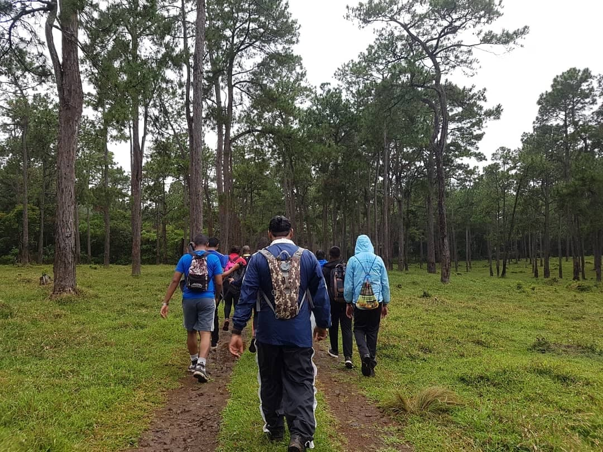
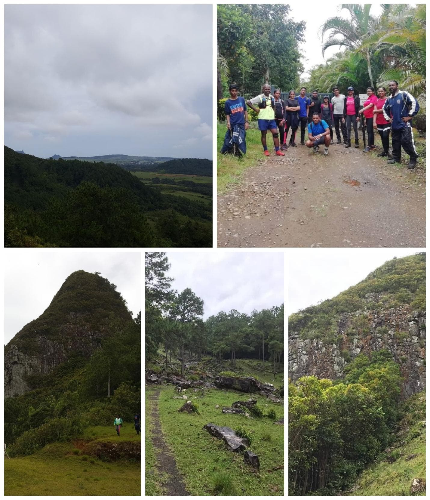
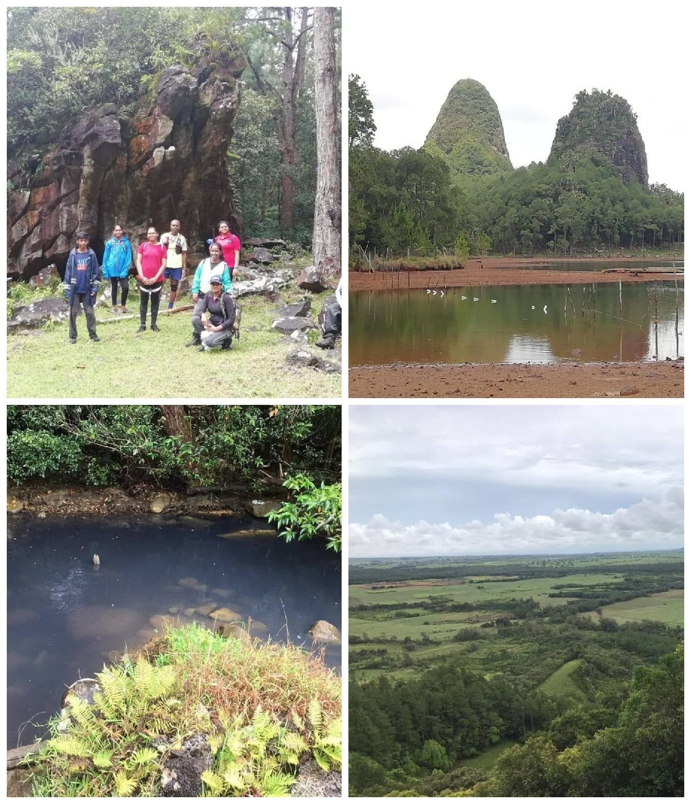

Le Monde Secret – The Secret world
Have you seen the TV show called “The Lost World”? ; The landscapes of the show were exactly the same as that of Piton du Milieu.
As its name suggest; Piton du Milieu “The Middle Peak” is located in the centre of the island around Midlands. This mountain is found amongst private plots where deer hunting is carried out during hunting seasons. The start of the trek is rather a normal one.

Walking on green moist grasses, fresh air, and huge pine trees with small lakes and rivulets. But, as you reach further inside, you encounter huge rocks, which must have detached from the mountains, carved like reptilian scales, the land filled with rounded shape rocks.
There were deer running around on the grass and monkeys hanging on trees looking at us curiously. The site felt like we entering the territory of a dormant monster with her eggs scattered throughout. For a while, one might feel as if we were in the Jurassic period where at any moment we could been encountered by a dinosaur. We easily spent more than half an hour on that site since we were in such a wonderment. Taking so many pictures so as not to forget that sight but I still have the images vividly in my head.

We continued our journey to the peak. Before the climb, we spotted many bats which were flying so low and amongst all the mist, it seemed so peculiar. Every experience that we had there seemed like the first time but we could not reach the peak since it was slippery as it started to rain. So we sat down and had lunch. From the highest point we reached, we could see the Bagatelle Dam and the Ebène Cyber City with its entourage.
Returning to the entrance, we felt like there was something mysterious about this site and that if we get the opportunity again, we will definitely finish the climb.
